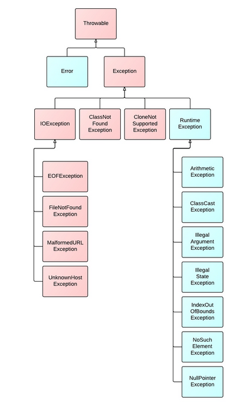

1.用maven部署的时候，发现线上环境有些lib的jar包和本地测试的版本不同，结果埋了好多坑，出现了各种运行的问题。
有些jar包版本不同的时候，不会抛出Exception，而是直接抛出了Error, 用Exception是无法抓取到这个异常的。
java异常继承图如下：

2.在一个commonUtils方法中，我全部使用了static方法。这个类中的方法会被反复频繁的调用，而且方法并不是很多，因此使用了static方法。然而太多的static是不符合开发规范的，主要原因如下：
1、static方法不能被子类继承，也就不能实现重写的多态
2、程序运行期间会一直占用内存，不被释放
所以尽量还是用单例来实现，而不是用static方法。然而对于小规模的，频繁使用的代码，可以考虑static来提升效率。
3.一般单例类我们用如下方式来实现：
public class Test {
public static Test instance;
public static Test getInstance() {
if(instance == null) {
instance = new Test();
}
return instance;
}
}
不过在自己的工程中发现了另外一种巧妙的实现单例管理的类 New.java :
import java.lang.reflect.Constructor;
import java.util.HashMap;
import java.util.Map;
/**
* 对象工厂，用于解释我们的单例注解，并提供获取单例对象的方法
*/
public final class New {
/**
* container to save Singleton
*/
private static volatile Map<String, Object> objs = new HashMap<String, Object>();
/**
* 返回单例的静态方法，如果类没有用Singleton注解标记，则返回一个全新的实例
* 关于该方法线程安全
* @param clazz
* @return the Singleton
*/
public static <T> T getInstance(Class<T> clazz) {
String className = clazz.getName();
synchronized (clazz) {
/**
* whether used the Single Annotation
*/
if (clazz.isAnnotationPresent(Singleton.class)) {
Object object = objs.get(className);
if (object == null) {
objs.put(className, newInstance(clazz));
}
return clazz.cast(objs.get(className));
}
return newInstance(clazz);
}
}
private static <T> T newInstance(Class<T> clazz) {
try {
Constructor<T> constructor = clazz.getDeclaredConstructor();
if (!constructor.isAccessible()) {
constructor.setAccessible(true);
}
return constructor.newInstance();
} catch (Exception e) {
throw new NewInstanceException(e);
}
}
}
class NewInstanceException extends RuntimeException {
/**
*
*/
private static final long serialVersionUID = 1L;
public NewInstanceException() {
super();
}
public NewInstanceException(String message, Throwable cause) {
super(message, cause);
}
public NewInstanceException(String message) {
super(message);
}
public NewInstanceException(Throwable cause) {
super(cause);
}
}
用法：
@Singleton
public class Test{
}
要取实例时：
New.getInstance(Test.class);